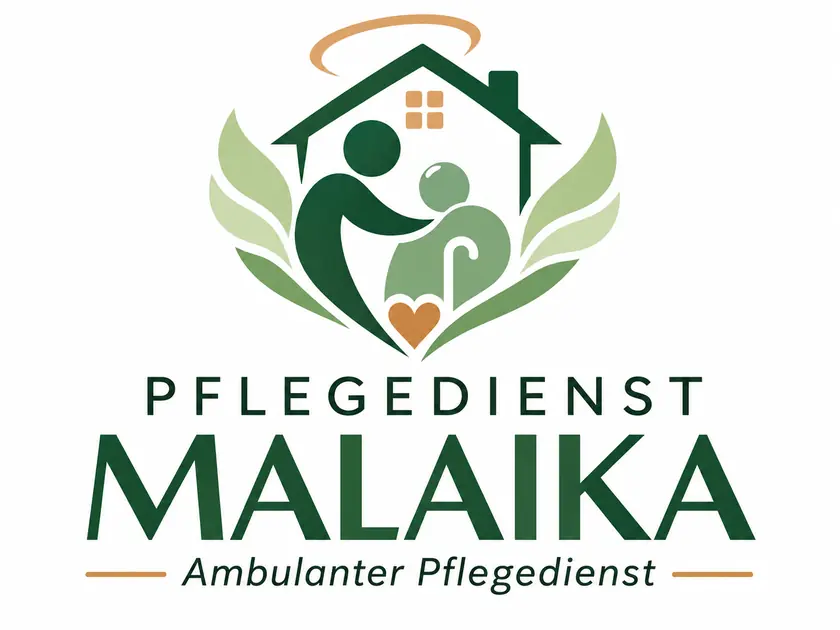

Grundpflege
Hilfe bei der alltäglichen Körperpflege und persönlichen Versorgung.
Grundpflege im DetailAmbulanter Pflegedienst · Berlin
Pflege bedeutet, den Menschen zu sehen. Pflegedienst Malaika begleitet pflegebedürftige Menschen mit Grund- und Behandlungspflege in ihrem eigenen Zuhause – orientiert an der persönlichen Situation.
Büro in Berlin-Spandau · Pflegeeinsätze in sieben Berliner Gebieten · Kontakt

Unser Vorteil · Mehrsprachiges Team
Verständigung schafft Vertrauen – besonders, wenn es um persönliche Pflege geht. Unser Team spricht Deutsch, Russisch, Englisch und Französisch.
Unser Angebot
Je nach Bedarf sind unterschiedliche pflegerische Leistungen wichtig. Wir erklären die Grundlagen und zeigen, wie Sie Malaika kontaktieren können.
Hilfe bei der alltäglichen Körperpflege und persönlichen Versorgung.
Grundpflege im DetailÄrztlich verordnete pflegerische Maßnahmen im häuslichen Umfeld.
Behandlungspflege im DetailWelche Möglichkeiten haben Familien, wenn die Eltern im Alltag Hilfe benötigen?
Informationen für AngehörigeWeitere Unterstützungsformen werden individuell angefragt und geprüft. Alle Themen und Leistungen ansehen.
Unser Einzugsgebiet
Unsere Mitarbeitenden sind mit Fahrzeugen mobil. In diesen Berliner Gebieten übernehmen wir Pflegeeinsätze zu Hause:
Fragen zu Ihrem Wohnort? 030 450 820 69 anrufen
Für Familien
Wenn sich die Situation zu Hause verändert, entstehen viele Fragen. Wir erklären, welche Art von Hilfe sinnvoll sein kann, wie Pflegebedarf beschrieben wird und was bei einer Anfrage wichtig ist.
Hilfe für meine Eltern verstehenOrientierung
Ärztlich verordnete Behandlungspflege kann unter den gesetzlichen Voraussetzungen von der Krankenkasse übernommen werden; Zuzahlungen sind möglich. Die Pflegekasse beteiligt sich je nach Pflegegrad und Leistungsanspruch an der Grundpflege. Nicht gedeckte Kosten können selbst zu tragen sein. Einzelheiten stehen auf unserer Leistungsseite.
Unsere Pflegekräfte fahren unter anderem nach Wedding, Reinickendorf/Wittenau, Lichtenberg, Steglitz/Zehlendorf, Tempelhof, Charlottenburg und Spandau. Den genauen Einsatzbeginn stimmen wir für Ihre Adresse ab.
Unser Team spricht Deutsch, Russisch, Englisch und Französisch. Geben Sie Ihre bevorzugte Sprache bei der Kontaktaufnahme an, damit wir die passende Verständigung abstimmen können.
Rufen Sie uns an und nennen Sie den Pflegeort, die Art der benötigten Hilfe und den gewünschten Beginn. Falls bereits ein Pflegegrad oder eine ärztliche Verordnung vorliegt, können Sie das im Gespräch erwähnen.